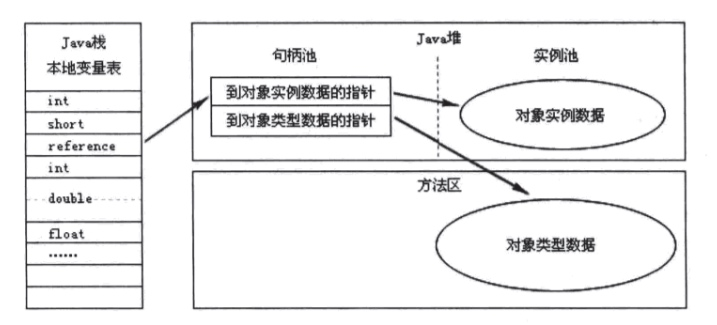
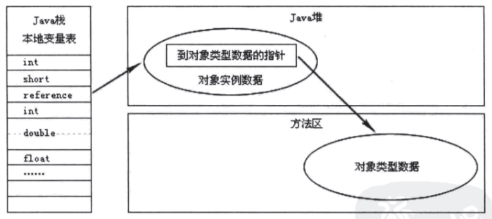

自动内存管理机制
程序计数器
程序计数器是一块较小的内存空间，它的作用可以看作是当前线程所执行的字节码的行号指示器。
字节码解释器工作时，就是通过改变这个计数器的值来选取下一条需要执行的字节码指令。
由于Java虚拟机的多线程是通过轮流切换并分配处理器执行时间的方式来实现的，在任何一个确定的时刻，一个内核只会执行一条线程中的指令。
因此，为了线程切换后能恢复到正确的执行位置，每条线程都需要有一个独立的程序计数器，每条线程之间的计数器互不影响，独立存储。我们称这类内存区域为“线程私有”的内存。
如果线程正在执行的是一个Java方法，这个计数器记录的是正在执行的虚拟机字节码指令的地址。
Java虚拟机栈
Java虚拟机栈也是线程私有的，它的生命周期与线程相同。
虚拟机栈描述的是Java方法执行的内存模型：每个方法被执行的时候都会同时创建一个栈帧（Stack Frame）用于存储局部变量表、操作栈、动态链接、方法出口等信息。每一个方法被调用直至执行完成的过程，就对应着一个栈帧在虚拟机栈中从入栈到出栈的过程。
局部变量表存放了编译器可知的各种基本数据类型（boolean、byte、char、short、int、float、long、double）、对象引用和returnAddress类型（指向了一条字节码指令的地址）
其中64位长度的long和double类型的数据会占用两个局部变量空间（slot），其余的数据类型只占用1个。
局部变量表所需要的内存空间在编译期间完成分配，当进入一个方法时，这个方法需要在桢中分配多大的局部变量空间是完全确定的，在方法运行期间不会改变局部变量表的大小。
本地方法栈
本地方法栈与虚拟机栈所发挥的作用是非常相似的，其区别不过是虚拟机栈为虚拟机执行Java方法（也就是字节码）服务，而本地方法栈则是为虚拟机使用到的Native方法服务。
Java堆
Java堆（Java Heap）是Java虚拟机所管理的内存中最大的一块。
Java堆是被所有线程共享的一块内存区域，在虚拟机启动时创建。此内存区域的唯一目的就是存放对象实例，几乎所有的对象实例都在这里分配内存。
Java堆是垃圾收集器管理的主要区域，因此很多时候也被称作“GC堆”。
方法区（Method Area）
方法区与Java堆一样，是各个线程共享的内存区域，它用于存储已被虚拟机加载的类信息、常量、静态变量、即时编译器编译后的代码等数据。
Java虚拟机规范对这个区域的限制非常宽松，除了和Java堆一样不需要连续的内存和可以选择固定大小或者可扩展外，还可以选择不实现垃圾收集。
运行时常量池
运行时常量池（Runtime Constant Pool）是方法区的一部分。Class文件中除了有类的版本、字段、方法、接口等描述等信息外，还有一项信息是常量池（Constant Pool Table），用于存放编译期生成的各种字面量和符号引用，这部分内容将在类加载后存放到方法区的运行时常量池中。
运行时常量池相对于Class文件常量池的另外一个重要特征是具备动态性。Java不要求一定只能在编译器产生，也就是并非预置入Class文件中常量池的内容才能进入方法区运行时常量池，运行期间也可能将新的常量放入池中，这种特征用得比较多的就是String类的intern()方法。
对象访问
Object obj = new Object();
如果这句代码出现在方法体中，那Object obj这部分的词义将会反映到Java栈的本地变量表中，作为一个reference类型数据出现。
而new Object()这部分的语义将会反映到Java堆中，形成一块存储了Object类型所有实例数据值的结构化内存，根据具体类型以及虚拟机实现的对象内存布局的不同，这块内存的长度是不固定的。另外，在Java堆中还必须包含能查找此对象类型数据（如对象类型、父类、实现的接口、方法等）的地址信息，这些类型数据则存储在方法区中。
不同虚拟机实现的对象访问方式会有所不同，主流的访问方式有两种：使用句柄和直接指针。
- 如果使用句柄访问方式，
Java堆中将会划分出一块内存来作为句柄池，reference中存储的就是对象的句柄地址，而句柄中包含了对象实例数据和类型数据各自的具体地址信息。

- 如果使用直接指针访问方式，
Java堆对象的布局中就必须考虑如何放置访问类型数据的相关信息，reference中直接存储的就是地址

- 使用句柄访问方式的最大好处就是reference中存储的是稳定的句柄地址，在对象被移动时只会改变句柄中的实例数据指针，而reference本身不需要被修改
- 使用直接指针访问方式的最大好处就是速度更快，它节省了一次指针定位的时间开销，由于对象的访问在Java中非常频繁，因此这类开销积少成多。